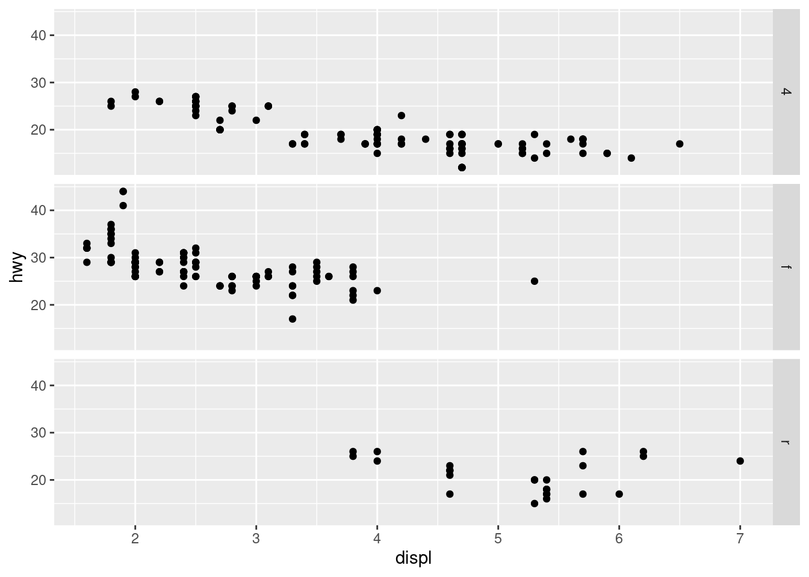
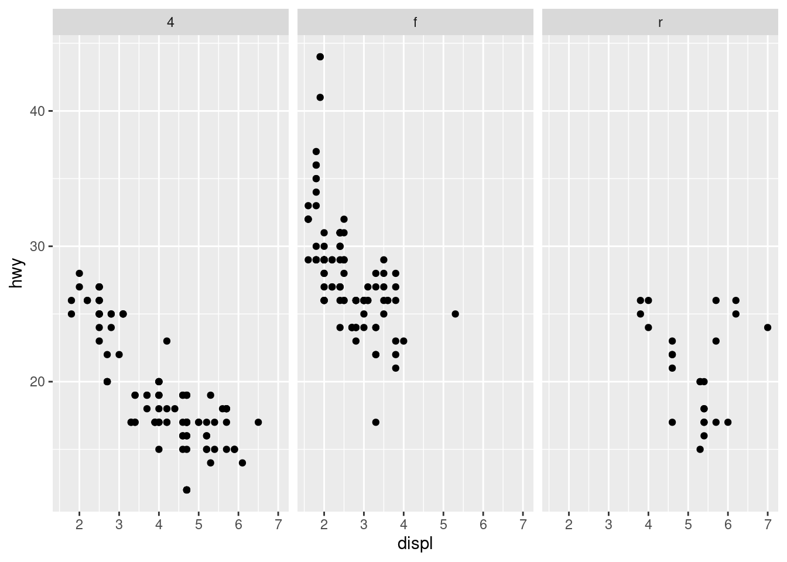
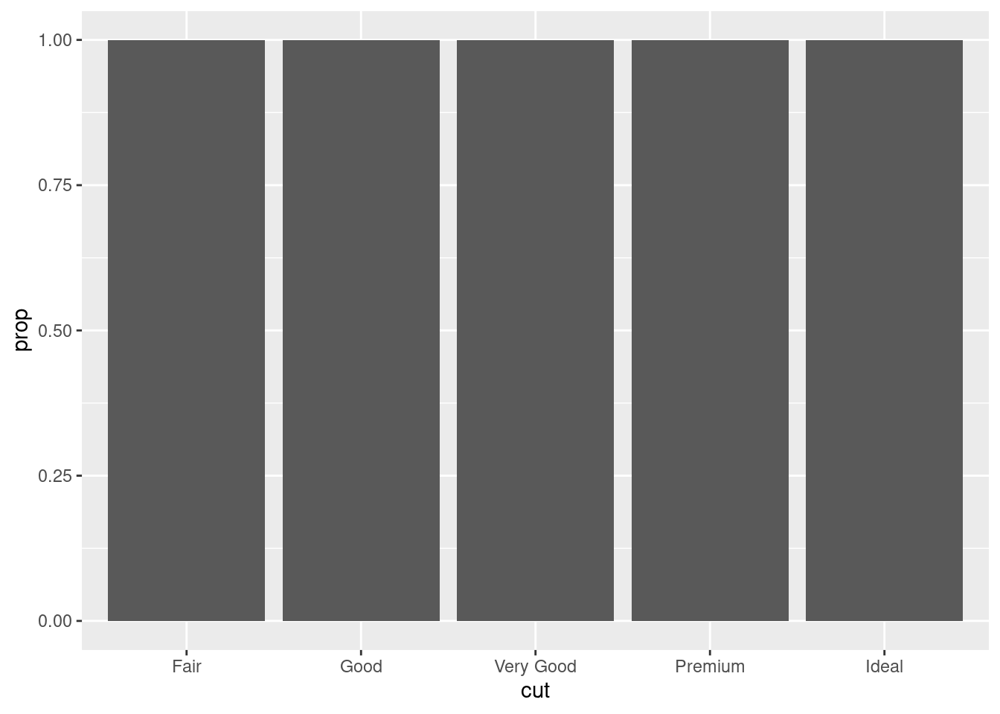

3.What does the stroke aesthetic do? What shapes does it work with? (Hint: use ?geom_point)
stroke controls the size of the stroke for shapes 21-24
4.What happens if you map an aesthetic to something other than a variable name, like aes(color = displ < 5)? Note, you’ll also need to specify x and y.
it seperates the displ lower than 5
ggplot(mpg,aes(x = hwy, y = displ,color = displ <5)) +geom_point()
10.4 Exercise 11.3.1
What geom would you use to draw a line chart? A boxplot? A histogram? An area chart?
geom_smooth,geom_boxplot,geom_histogram,geom_area
2.Earlier in this chapter we used show.legend without explaining it:\
`geom_smooth()` using method = 'loess' and formula = 'y ~ x'
ggplot(mpg, aes(x = displ, y = hwy)) +geom_point(aes(shape ="circle open", color = drv))
10.5 Exercise 11.4.1
1.What happens if you facet on a continuous variable?
this is what google says:
You’ll get one row or column for each unique value of the variable
2.What do the empty cells in plot with facet_grid(drv ~ cyl) mean? How do they relate to this plot?
means there was no data in that area i assume
ggplot(mpg) +geom_point(aes(x = drv, y = cyl)) +facet_grid(drv ~ cyl)
3.What plots does the following code make? What does . do?
It means “everything”, another way of saying don’t facet across columns because we’re not diving up the data by a variable’s levels across columns. And in the second case it’s across rows
ggplot(mpg) +geom_point(aes(x = displ, y = hwy)) +facet_grid(drv ~ .)
ggplot(mpg) +geom_point(aes(x = displ, y = hwy)) +facet_grid(. ~ cyl)
What are the advantages to using faceting instead of the color aesthetic? What are the disadvantages? How might the balance change if you had a larger dataset?
the advantages of faceting is seeing each subgroup apart from each other to see more clearly. the disadvantages are not seeing the data overlap with each other.im pretty sure they’ll just be more points.
5.Read ?facet_wrap. What does nrow do? What does ncol do? What other options control the layout of the individual panels? Why doesn’t facet_grid() have nrow and ncol argument
you can choose the number of rows and cols with nrow and ncol.like strink and as.table etc.
for the same reason facet wrap does
6.Which of the following two plots makes it easier to compare engine size (displ) across cars with different drive trains? What does this say about when to place a faceting variable across rows or columns?
the second plot makes it easier. use which ever suits best
ggplot(mpg) +geom_point(aes(x = displ, y = hwy)) +facet_grid(drv ~ .)

ggplot(mpg) +geom_point(aes(x = displ, y = hwy)) +facet_grid(. ~ drv)
7.Recreate this plot using facet_wrap() instead of facet_grid(). How do the positions of the facet labels change?
facet grid chose to use rows instead of columns in the first code
ggplot(mpg) +geom_point(aes(x = displ, y = hwy)) +facet_grid(drv ~ .)
ggplot(mpg) +geom_point(aes(x = displ, y = hwy)) +facet_wrap( ~ drv)

10.6 Exercise 11.5.1
1.What is the default geom associated with stat_summary()? How could you rewrite the previous plot to use that geom function instead of the stat function?
3.Most geoms and stats come in pairs that are almost always used in concert. Read through the documentation and make a list of all the pairs. What do they have in common?
alot of the geoms use stat = identity and some use bin and count
4.What variables does stat_smooth() compute? What parameters control its behavior?
stat_smooth () provides the following variables, some of which depend on the orientation: y or x predicted value
5.In our proportion bar chart, we need to set group = 1. Why? In other words, what is the problem with these two graphs?
these graphs don’t show any information
ggplot(diamonds, aes(x = cut, y =after_stat(prop))) +geom_bar()

ggplot(diamonds, aes(x = cut, fill = color, y =after_stat(prop))) +geom_bar()
i think i fixed them
ggplot(diamonds, aes(x = cut)) +geom_bar()
ggplot(diamonds, aes(x = cut, fill = color)) +geom_bar()
10.7 Exercise 11.6.1
1.What is the problem with this plot? How could you improve it?
ggplot(mpg, aes(x = cty, y = hwy)) +geom_point()
2.What parameters to geom_jitter() control the amount of jittering?
To adjust the amount of jittering along the x and y axes, one can explicitly set the position adjustment: geom_jitter (data= d, mapping = aes (x =system, y = runtime), size =1, position = position_jitter (width =0.3, height =0))
coord quick map sets the aspect ratio correctly for maps while coord map projects a portion of the earth onto a 2d plane so i think coord quick map is like for exact coordinates and coord map is for a bigger representation i think
3.What does the plot below tell you about the relationship between city and highway mpg? Why is coord_fixed() important? What does geom_abline() do?
this plot shows the more city miles per gallon the higher the highway mile per gallon goes,i believe coord fixed makes the plot like taller to show the information better,geom abline shows the same information only on a solid line